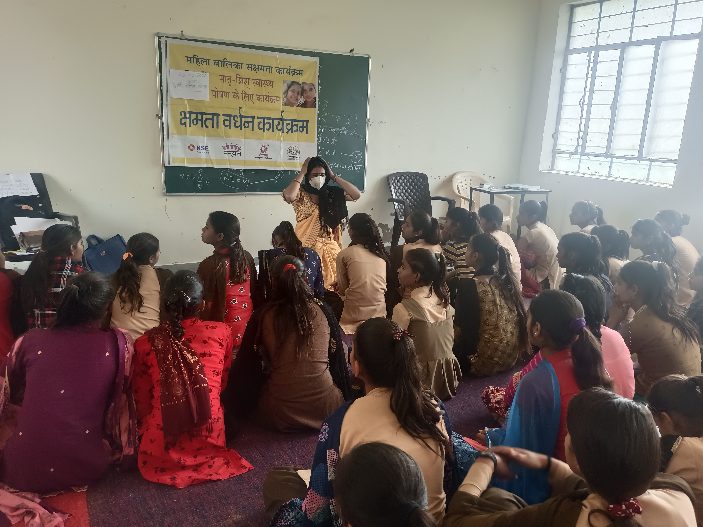
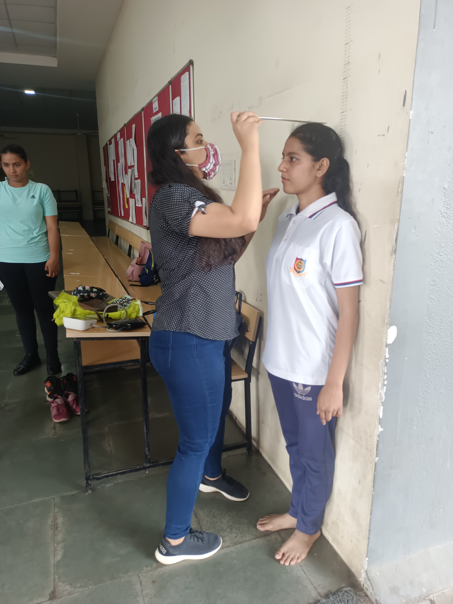
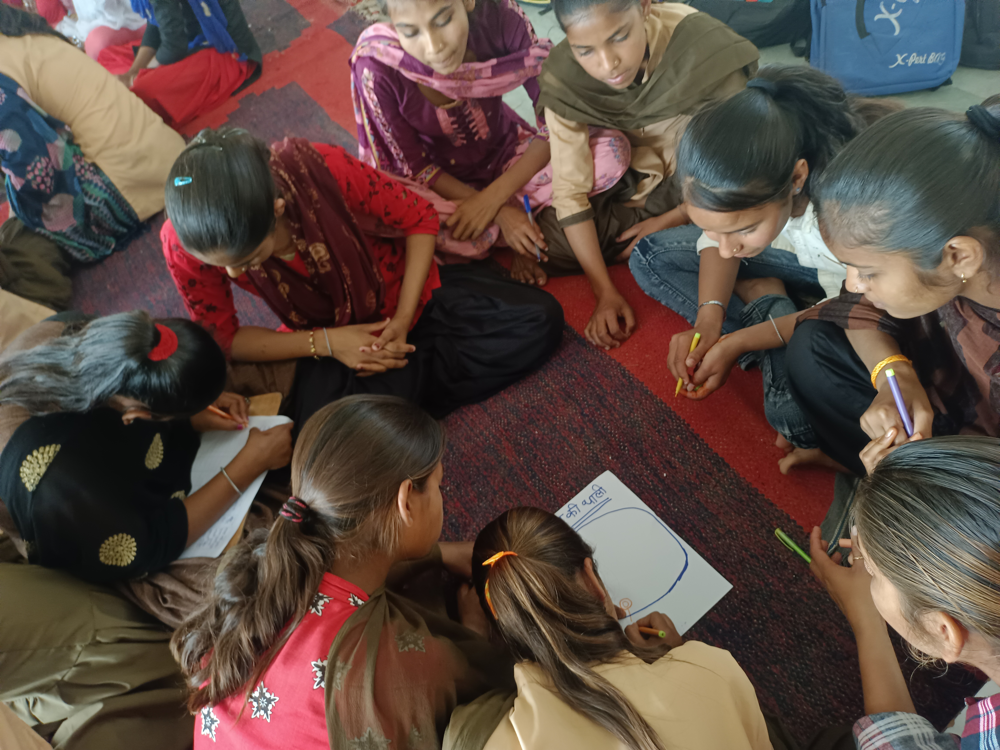
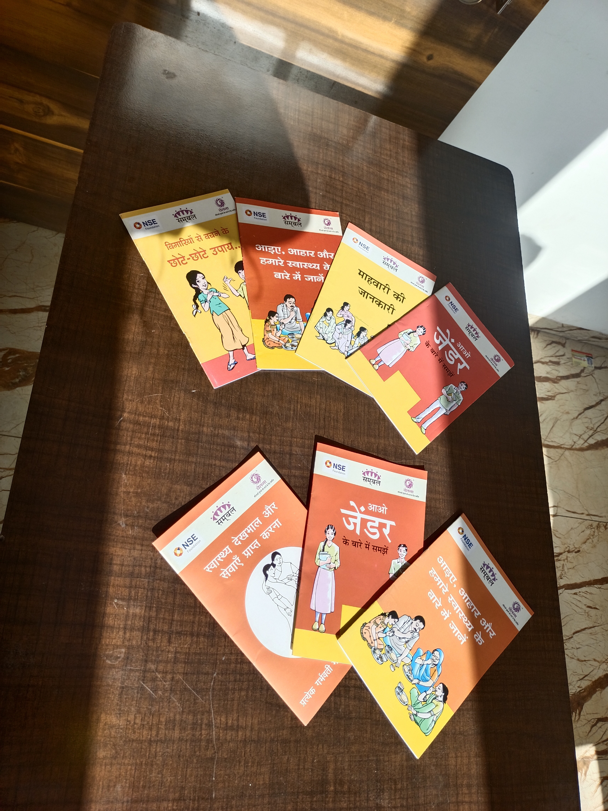
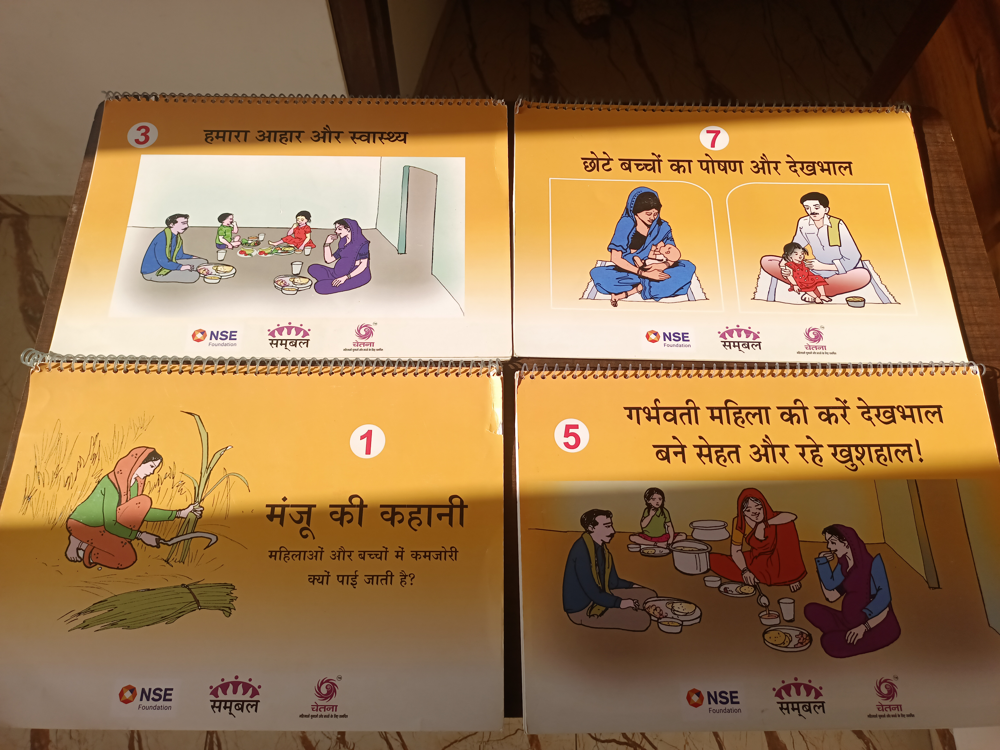

From nutrition science to field research to data policy
Each step added a new lens — and kept returning to the same question.
Producing policy data stories on agricultural economics, market linkages, and water productivity in Raichur, Karnataka. Built financial models for value chain interventions — found farmers capture as little as 22% of final product value. Mapped crop water productivity for approximately 1,000 farmers using QGIS, feeding into WELL Labs' CLARITY rural transformation program. Presented at the 39th Annual Conference on Agricultural Marketing, University of Hyderabad (NABARD & ICSSR). Also researching lead and heavy metal contamination in rural drinking water sources.


Government stakeholder workshop · Nutrition Smart Village program, field visit
Led impact evaluations across health, nutrition, climate resilience, and livelihoods. Key work: evaluating Welthungerhilfe's Nutrition Smart Villages program across Bangladesh, Nepal, and India (612,000+ beneficiaries across 260+ villages); designing the Resilience Measurement Index (3,000 households, adopted by 4+ organizations); epidemiological modelling for a UNAIDS policy white paper on HIV prevention trends; partnership building with 300+ NGOs through the Community Action Collaborative. Conducted mixed-method field research across 600 households in 6 states — sitting with women farmers, migrant workers, fisherfolk, and families in their homes.


Household surveys · FGDs with community members across states
Analysed 10 high-growth market segments across food, agriculture, and nutrition (combined revenue over $60B) through 60+ primary industry interviews. Published 12 research reports and delivered market entry strategies for health and nutrition executives. An early grounding in the economics of food systems — which connected, years later, to the value chains of farmers in Karnataka.
Where it started. Conducting maternal and child health training across 40 villages in one of India's most underserved districts. Sitting on floors with women from Self-Help Groups, measuring adolescent girls' heights, teaching WASH and nutrition basics to communities with little prior access. Achieved 85% improvement in MCH learning outcomes across 4 clusters, reaching 500+ SHG women and 700+ adolescent girls. This is where the question first took shape: how do you make evidence reach people who need it most?



Capacity building sessions · Adolescent health assessments · Community learning circles, Rajasthan 2022
B.Sc. in Food, Nutrition & Dietetics (Hons) from SNDT Women's University, Mumbai (GPA 8.05, Top 5%). M.Sc. in Public Health Nutrition from Symbiosis Institute of Health Sciences, Pune (GPA 8.85, Top 5 in class) — thesis on social media marketing and dietary choices of young adults, scored 10/10, later published in Nutrients (2025). Impact Fellow, Global Governance Initiative, New Delhi (2022). PG Certificate in Data Sciences for Social Impact from Ashoka University on a 100% scholarship through J-PAL South Asia's India Data Capacity Accelerator.


Health education materials developed for community programs